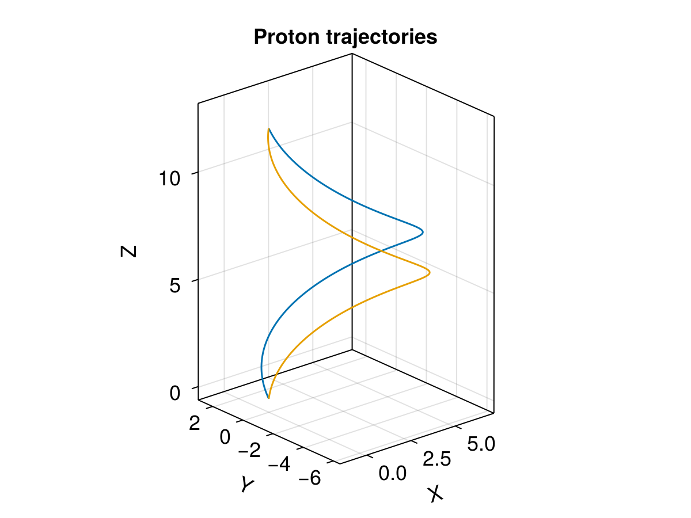

Ensemble tracing with callbacks


This example demonstrates tracing multiple protons in an analytic E field and numerical B field. It also combines one type of normalization using a reference velocity U₀, a reference magnetic field B₀, and an initial reference gyroradius rL. One way to think of this is that a proton with initial perpendicular velocity U₀ will gyrate with a radius rL. Check demo_ensemble for basic usages of the ensemble problem. The SavingCallback from DiffEqCallbacks.jl can be used to save additional outputs for diagnosis. Here we save the magnetic field along the trajectory, together with the parallel velocity.
using TestParticle
using OrdinaryDiffEq
using Meshes
using StaticArrays
using Statistics
using LinearAlgebra
using DiffEqCallbacks
using CairoMakie
CairoMakie.activate!(type = "png")
"Set initial state for EnsembleProblem."
function prob_func(prob, i, repeat)
B0 = prob.p[3](prob.u0)
B0 = normalize(B0)
Bperp1 = SA[0.0, -B0[3], B0[2]] |> normalize
Bperp2 = B0 × Bperp1 |> normalize
# initial azimuthal angle
ϕ = 2π*rand()
# initial pitch angle
θ = acos(0.5)
sinϕ, cosϕ = sincos(ϕ)
prob.u0[4:6] = @. (B0*cos(θ) + Bperp1*(sin(θ)*cosϕ) + Bperp2*(sin(θ)*sinϕ)) * U₀
prob
end
# Analytical electric field
E(x) = SA[0.0, 0.0, 0.0]
# Number of cells for the field along each dimension
nx, ny, nz = 4, 6, 8
# Spatial extent along each dimension
x = range(-10.0, 10.0, length=nx)
y = range(-10.0, 10.0, length=ny)
z = range(-10.0, 10.0, length=nz)
Δx = x[2] - x[1]
Δy = y[2] - y[1]
Δz = z[2] - z[1]
grid = CartesianGrid((length(x)-1, length(y)-1, length(z)-1),
(x[1], y[1], z[1]), (Δx, Δy, Δz))
# Numerical magnetic field
B = Array{Float32, 4}(undef, 3, nx, ny, nz)
B[1,:,:,:] .= 0.0
B[2,:,:,:] .= 0.0
B[3,:,:,:] .= 1.0
Bmag = @views hypot.(B[1,:,:,:], B[2,:,:,:], B[3,:,:,:])
B₀ = sqrt(mean(vec(Bmag) .^ 2))
const U₀ = 1.0
const rL = 4.0
Ω = q2mc = U₀ / (rL*B₀)
# By default User type assumes q=1, m=1
# bc=2 uses periodic boundary conditions
param = prepare(grid, E, B, q2mc; species=User, bc=2)
x0 = [0.0, 0.0, 0.0] # initial position [l₀]
u0 = [1U₀, 0.0, 0.0] # initial velocity [v₀]
stateinit = [x0..., u0...]
tspan = (0.0, 2π/Ω) # one averaged gyroperiod based on B₀
prob = ODEProblem(trace_normalized!, stateinit, tspan, param)
saved_values = SavedValues(Float64, Tuple{SVector{3, Float64}, Float64})
function save_B_mu(u, t, integrator)
b = integrator.p[3](u)
μ = @views b ⋅ u[4:6] / hypot(b...)
b, μ
end
cb = SavingCallback(save_B_mu, saved_values)
# Number of trajectories
trajectories = 2
ensemble_prob = EnsembleProblem(prob; prob_func, safetycopy=false)
sols = solve(ensemble_prob, Vern9(), EnsembleThreads(); trajectories, callback=cb)
# Visualization
f = Figure(fontsize = 18)
ax = Axis3(f[1, 1],
title = "Proton trajectories",
xlabel = "X",
ylabel = "Y",
zlabel = "Z",
aspect = :data,
)
for i in eachindex(sols)
lines!(ax, sols[i], label="$i")
end

This page was generated using DemoCards.jl and Literate.jl.